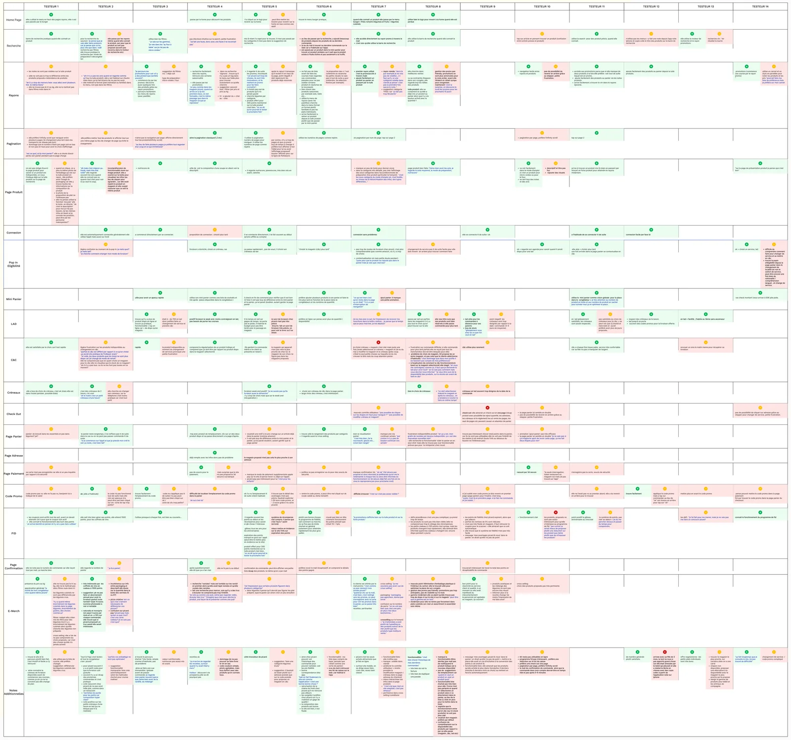

Framing
- ProblemCustomers struggled to find and read key product information (Nutri-Score, Eco-Score) and did not see the value of the loyalty programme online.
- What I didScoped, recruited and ran 25 usability tests, 4 focus groups and 10 co-design workshops, then set up a process feeding user feedback into every sprint.
- ImpactProduct tiles redesigned, loyalty page redesigned and live in the app, and research used to prioritise the web and mobile roadmap.
Context
Context and research question
Picard is a leading French frozen-food retailer with more than 1,200 stores and 12 million customers. Research sat at the heart of a digital transformation and Salesforce migration programme covering the website and the mobile app, where the web and mobile teams needed to decide what to improve first.
How do customers choose products and understand the loyalty programme online, and which changes would help them most?
Business goals
- Make nutrition and environmental information readable at a glance on product tiles.
- Increase understanding and use of the loyalty programme in the app. KPI: +3% view rate on the last tile of the carousel.
- Give Product a user-based way to prioritise the web and mobile roadmap.
Method
Approach and methodology
- 25moderated usability tests
- 4focus groups
- 10co-design workshops
- 2platforms: web & mobile app
I combined methods so that each one answered a different part of the question: tests showed what people actually do, focus groups explained why, and workshops turned problems into solutions with the people who would build them.
| Method | Why this method | Sample |
|---|---|---|
| Usability tests | Observe real behaviour on product tiles and the loyalty journey, task by task. | n = 25 across two studies: 14 on the full shopping journey, 11 on loyalty · users under 35 (1 previous web order) and users aged 35–55 (4 previous web orders) |
| Focus groups | Understand expectations and perceptions of nutrition labels and loyalty benefits. | 4 groups · business teams: marketing, loyalty programme, designers, PMs, POs |
| Co-design workshops | Prioritise and sketch solutions with Product, business, tech and design. | 10 workshops · business teams: marketing, loyalty programme, designers, PMs, POs |
Constraint: research ran alongside a Salesforce migration, so findings had to fit sprint planning without slowing delivery.
Stakeholder mapping
Before each project, I mapped stakeholders by power and interest. The matrix decided how I involved each of them, from co-design to a simple update.

- Manage closely (Head of the Digital Factory, Lead PM, Loyalty PM, Loyalty business owner, data analyst): involved in framing, co-design workshops and every research readout.
- Keep satisfied (CEO, Managing Director, Marketing and Customer Service business owners): short summaries at key decision points.
- Keep informed (Loyalty PO, Salesforce PO): regular updates on findings, especially where they touched the Salesforce migration.
- Monitor (Art Director, data and QA teams): informed when a change affected their work.
Data
Synthesis
I coded every session, grouped observations by theme, then mapped the shopping journey to locate where customers dropped off or hesitated.
Coding the test sessions
For the study on the full shopping journey, I coded every session in a grid: one column per tester, one row per step of the journey, each note marked positive, negative or blocking, with verbatims in blue.


Shopping journey map
From the coding, I built the journey map: the balance of positive and negative notes at each stage shows where customers hesitate, and checkout is the lowest point.
Search
+14 −7
Browse aisles
+15 −15
Product page
+9 −4
Delivery & collection
+26 −18
Basket
+11 −7
Checkout & payment
+7 −23
Loyalty
+9 −6
Confirmation
+3 −5
Search
No tolerance for typos and no suggestions: a product such as Mix & Miam could not be found by typing.
Spelling tolerance and search suggestions
Browse aisles
No ratings on product tiles, repeated products, back to the top of the list after each add; split between pages and infinite scroll.
Ratings on tiles, keep the scroll position
Product page
Well liked (ratings, Nutri-Score, preparation), but detailed information in the accordion felt cluttered.
Clearer hierarchy of detailed information
Delivery & collection
Hard to switch between home delivery and click & collect; products become unavailable after switching; preferred store not offered.
Clear service switch, availability shown earlier
Basket
Mini basket and basket page felt like duplicates; unavailable products appeared late.
Merge mini basket and basket
Checkout & payment
Promo code hard to find (12 testers), steps not clickable to go back, 3-D Secure not always requested.
Visible promo code field, clickable steps
Loyalty
Points rules misunderstood (1 euro = 1 point), expiry unclear, rewards not targeted, challenges too long.
Explain how points work and when they expire
Confirmation
Little reassurance after ordering.
Clear recap and next steps
+ positive notes − negative notes Pain point Opportunity
In their own words
It's cluttered: the information isn't well organised, and there are different fonts.
Tester 7 · about the detailed product informationIt would be better to offer a discount on the products I like rather than impose products on me.
Tester 10 · about loyalty rewardsA bit like in Picard stores: when you walk in there are always the first freezers. It's the same route as in the store, and I reproduce it.
Tester 4 · about how she browses the aislesThat's for sure, it's not visible enough!
Tester 7 · about the promo code field
Key insights
Key insights
-
Insight 1: Product labels were hard to read and easy to confuse
Labels were not accessible and too small. Customers mixed up the Nutri-Score and the Eco-Score, the PDO label went unnoticed, and the information hierarchy on the tiles made key details hard to find.
- Evidence
- Usability tests · 15 of 25 participants
- Decision
- Redesign the product tiles: reorganise the information hierarchy, enlarge and clearly separate the Nutri-Score and Eco-Score, and highlight the PDO label.
- Result
- New tiles shipped with key product information shown more clearly.
-
Insight 2: The loyalty programme was not understood
Customers did not understand how the points system worked. On mobile, horizontal scrolling was difficult and the last tile of the carousel was barely visible, so part of the content was missed.
- Evidence
- Focus groups + usability tests
- Decision
- Prioritise the loyalty journey on the roadmap and redesign the loyalty page, explaining points simply and making the carousel easier to browse.
- Result
- New loyalty page live in the app.
-
Insight 3: Search and filters slowed customers down
The filter system was complex, the same products appeared under several filters, and the search bar offered no typing suggestions.
- Evidence
- Usability tests · 12 of 25 participants
- Decision
- Use search suggestions
- Result
- Not on the roadmap at the time
-
Insight 4: One-off studies were not enough to keep pace with sprints
Teams needed user feedback at the speed of delivery, not only at the end of a study.
- Evidence
- Requests from Product and tech during the migration
- Decision
- Recommend continuous research feeding every sprint
- Result
- Not on the roadmap at the time either
Impact
Recommendations and impact
- Product tilesRedesignedNutri-Score and Eco-Score shown more clearly
- Loyalty pageLive in the appJourney prioritised on the roadmap
- RoadmapPrioritisedFindings used for trade-offs on web and mobile
- Research opsEvery sprintUser feedback fed into each sprint
- Reach12M customers1,200+ stores, web and app
Retrospective
What I learned and what I would do differently
- Co-design workshops with tech and business teams made recommendations faster to adopt, because they had shaped them.
- What I would do differently: measure a baseline before the redesign, so that the impact of the new tiles and loyalty page can be shown with clear before / after metrics.
- Involving store teams earlier would have connected online and in-store journeys: many loyalty questions start at the checkout, not in the app.
Confidentiality. Some data, screens and verbatims have been anonymised or simplified to protect Picard and its customers. Figures shown are those I am allowed to share.